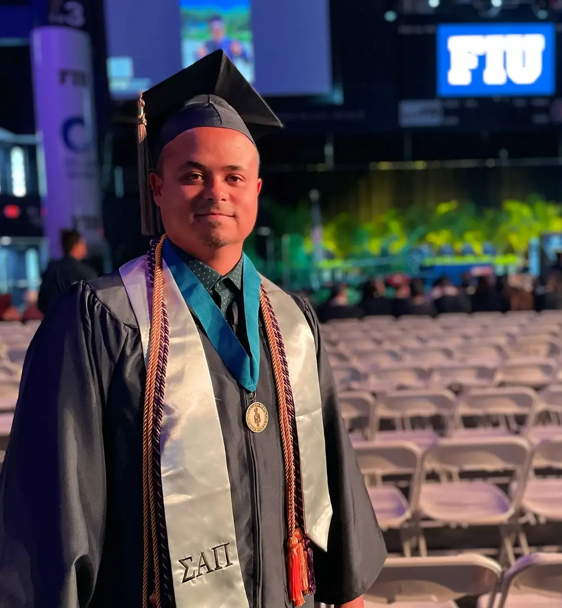

Hi, I’m Leonardo De Oliveira.
Meet your new coworker.
I build useful software and automate the work that slows people down.

01 / About me
Creative thinking.
Practical solutions.
I am a creative and automation-driven Software Developer committed to problem-solving by developing user-friendly applications to improve and automatize tasks. For years, I had the opportunity to work on multiple projects with government and private organizations: designing, testing, upgrading, and maintaining programs allowing customers to enhance work productivity. From small Power Automate flows to extensive software migrations, I have experience with various tools, popular computer languages, and frameworks.
Let's work together02 / Background
Experience
& education.
A mix of development, operations, and service experience shapes how I approach every project.

Work
Education
03 / Selected work
Projects that
made a difference.

04 / What I use
Tools for turning
ideas into action.
React · Vue · JavaScript · HTML · CSS
Node · PHP · Python · Progress ABL
REST APIs · WordPress · Power Automate
UI/UX · Accessibility · Automation